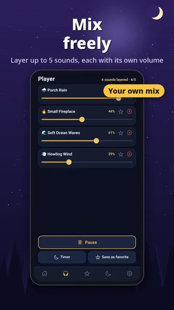

Dream Builder Apps · Sleep Sounds
Sleep sounds to drown out a snoring partner
An app cannot stop someone else snoring, and it is not a treatment for snoring or for any sleep disorder. What a steady sound can do is cover some of the noise, so the snoring stands out less while you try to sleep.
People often look for “sleep sounds to cover snoring” or “how to drown out snoring without earplugs”. Rain, a stream or ocean waves are common choices because they stay fairly even and do not have a tune to follow. They will not hide very loud snoring, and they work better as one option among others — such as earplugs — than as a guarantee.


How masking a snore usually works
A snore is a repeating sound in a quiet room. A continuous background raises the baseline, so each snore is a smaller change. Heavier, steadier rain tends to cover more than a light drip with gaps in it. Some people prefer a deeper mix, for example rain with a stream or distant thunder; others find thunder itself too eventful and keep to plain rain.
Place the sound close to you — a speaker on your side of the bed, or headphones if you both find that comfortable. Set the volume only high enough that the snoring blends in a little. Turning it up and up rarely helps, and a loud sound all night is tiring for you too.
If the noise is coming from next door rather than from the same bed, the same idea applies. There is a separate page on how to sleep with noisy neighbors using nature sounds. If street noise or a neighbor is part of the problem as well, start with how to sleep in a noisy apartment.
What the app actually does
Sleep Sounds – Restful Night is an Android app with 23 nature sounds: rain, fireplace, stream, ocean, wind and thunder. You can play one sound or mix up to five, with a volume for each, and save the mix in Favorites. The sounds are stored in the app, so they work offline and do not depend on a late-night video.
Playback continues on a locked screen, with play and pause from the lock screen. A sleep timer of up to 12 hours can fade the sound out gently, which is useful if you only need cover until you drift off — or you can let it run until morning. There are no ads.
If rain is the sound you want, see offline rain sounds for sleeping.
Please read this as a limit, not a promise
Sleep Sounds is not a medical app. It does not treat snoring, sleep apnoea or other sleep disorders, and it is not a reason to put off advice from a health professional if you are worried about a partner’s snoring. It is only a calm background that may make the night a little easier to share.
Try the app
Sleep Sounds was first built for personal use, by someone who is sensitive to noise at night. A 7-day free trial starts on first launch, with every feature available and no payment details required. The trial does not become a paid subscription on its own. After that you can continue with a monthly subscription in Google Play, at the price shown before you subscribe. No tracking, no account. Made in Finland.
7 days free, then a monthly subscription. Sleep Sounds – Restful Night, on Android.